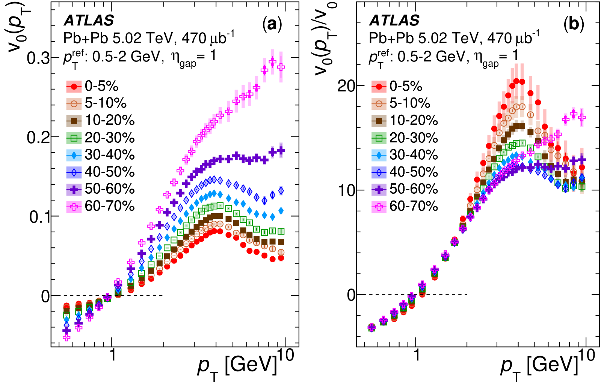
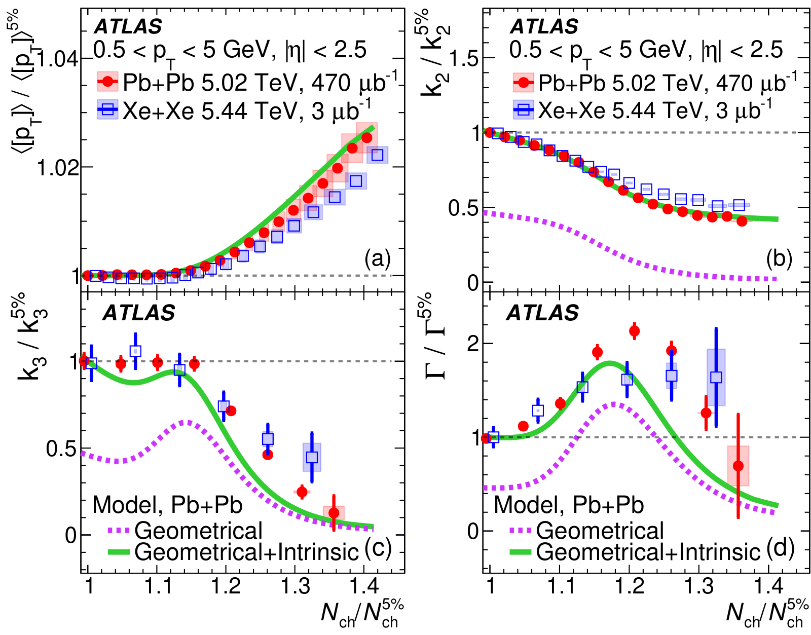
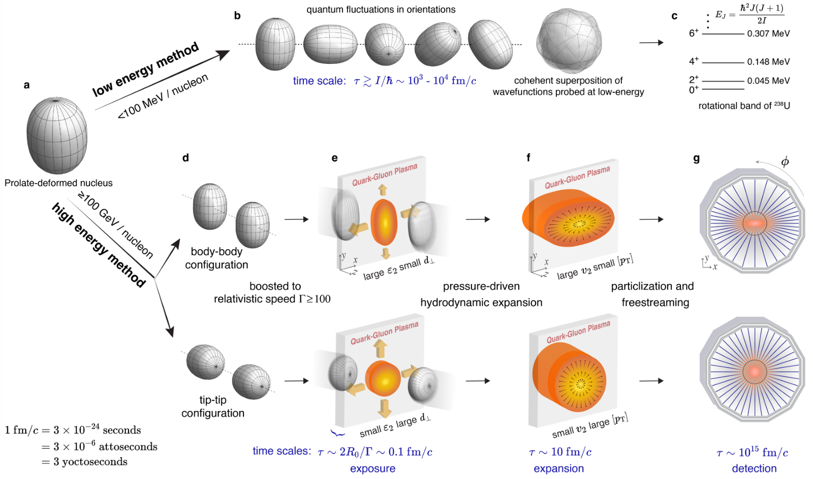
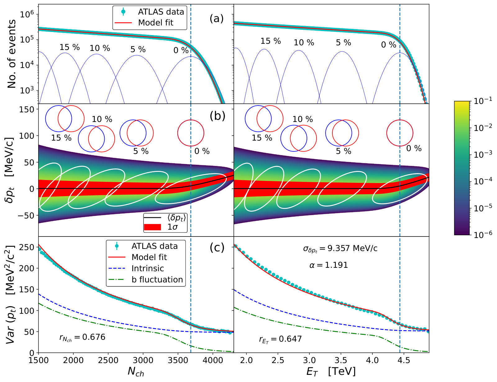
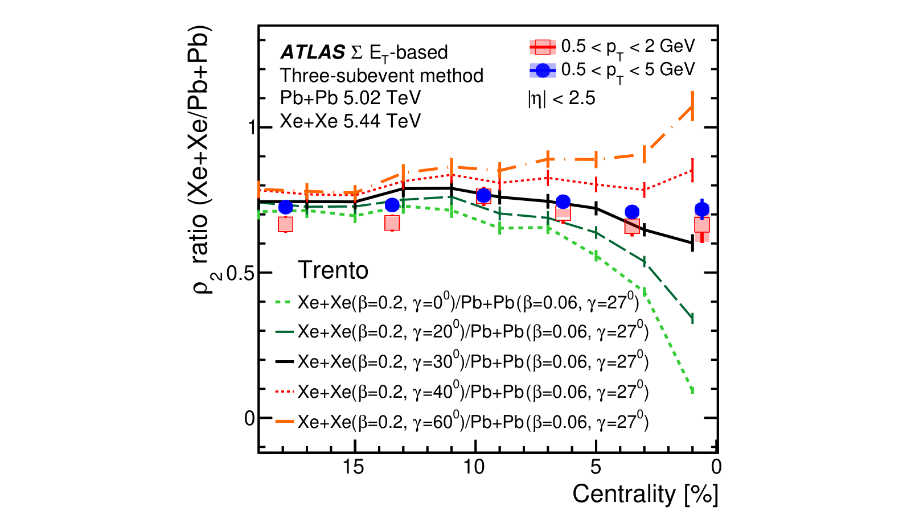
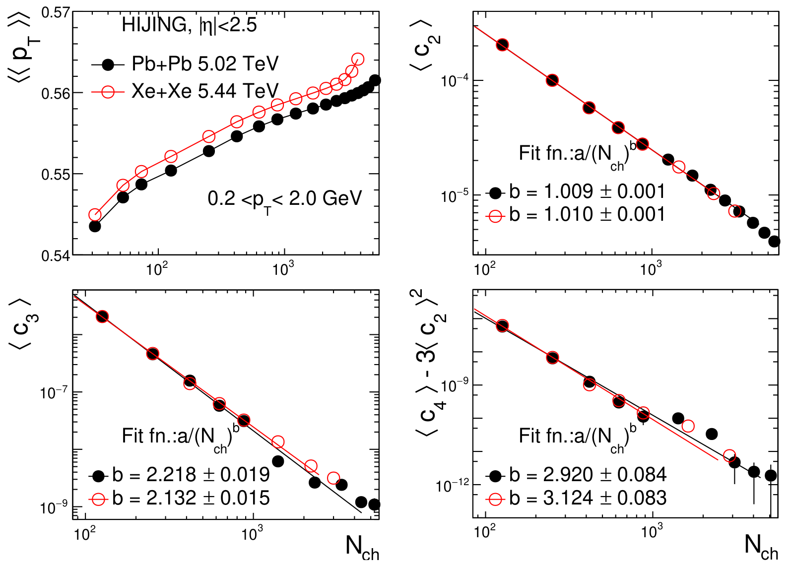
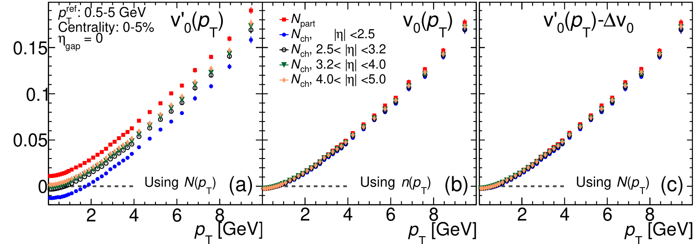
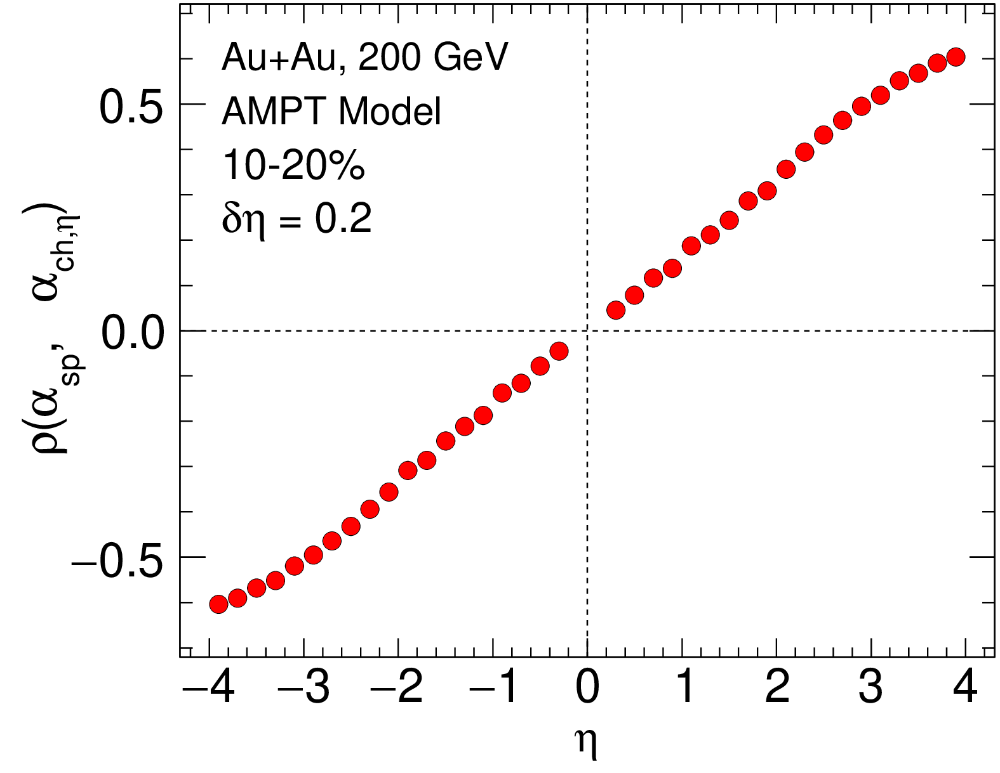
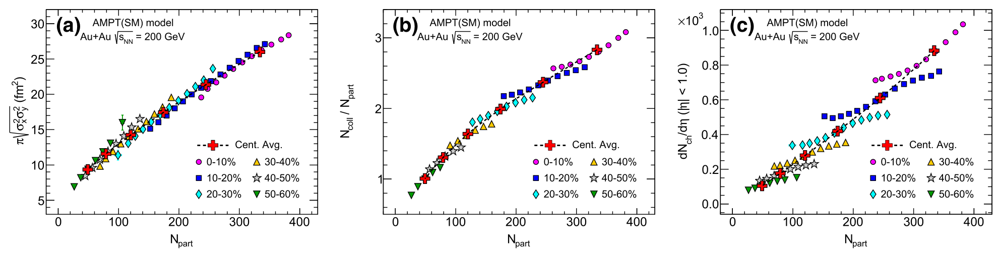

About Me
I am a Postdoctoral Researcher in high-energy nuclear physics at the Institute for Gravitational and Subatomic Physics (GRASP) at Utrecht University, also affiliated with Nikhef. I work with the ALICE Experiment at the LHC at CERN.
My research probes the quark-gluon plasma (QGP), the primordial state of matter that filled the Universe microseconds after the Big Bang. By colliding heavy nuclei at nearly the speed of light, we recreate tiny droplets of this "quark soup" and study its properties, such as its viscosity, its speed of sound and how it flows collectively. The same collisions can also be used to image the shapes of the colliding atomic nuclei.
I completed my Ph.D. at Stony Brook University, working with data from the ATLAS experiment at CERN and the STAR experiment at Brookhaven National Laboratory.
Research Highlights
Selected papers, newest first. Click a card for an animated explanation.

First experimental study showing radial flow is collective The momentum dependence of radial-flow fluctuations, v₀(pT), passes all three tests of collectivity and is sensitive to bulk viscosity. Animated explainer →
First measurement disentangling geometrical and intrinsic fluctuations in the initial state Ultra-central collisions switch off size fluctuations, separating the two sources and constraining the QGP speed of sound. Animated explainer →
First imaging of the shapes of atomic nuclei in high-energy collisions U+U and Au+Au collisions take snapshots of nuclear shapes, measuring uranium's deformation and triaxiality. Animated explainer →
First direct evidence of thermalization at the femtoscale At fixed multiplicity, smaller and denser fireballs give particles more momentum, explaining ATLAS data on [pT] fluctuations. Animated explainer →
First experimental evidence that heavy-ion measurements are sensitive to nuclear triaxiality Correlating elliptic flow with mean momentum in Xe+Xe and Pb+Pb collisions shows that the ¹²⁹Xe nucleus is triaxial. Animated explainer →
A method to measure higher-order fluctuations of the mean transverse momentum Fast cumulant and subevent methods for the variance, skewness and kurtosis of [pT], with a non-flow baseline from HIJING. Animated explainer →Covered by CERN Courier, Phys.org, BNL Newsroom and others (see coverage) and presented in invited talks including a CERN-TH seminar (all talks).
Research Interests
Research Explained
Short, animated explanations of papers where I am a primary or leading author: the gap each one addresses, what we measured, what we found and what comes next. Every plot is taken from the paper itself.
We made the first measurement of how the plasma's radial push fluctuates at each particle momentum, v₀(pT). It passes all three tests of collective flow and is sensitive to the plasma's bulk viscosity.
Phys. Rev. Lett. 136, 032301 (2026) · Editors' Suggestion Animated explainer →Most atomic nuclei are not round. By smashing uranium and gold nuclei together at RHIC, we took instant snapshots of their shapes and measured how elongated uranium is, plus its small deviation from a perfect cigar.
Nature 635, 67–72 (2024) Animated explainer →A collision's average particle momentum varies because the plasma droplet's size changes and because of everything else at fixed size. In the most head-on collisions the size stops varying, which let us separate the two sources and probe the plasma's speed of sound.
Phys. Rev. Lett. 133, 252301 (2024) Animated explainer →In each collision we measured the fireball's elliptic shape (v₂) and outward push ([pT]), and how strongly the two go together. Comparing xenon with nearly spherical lead gave strong evidence that the ¹²⁹Xe nucleus is triaxial, with all three axes different.
Phys. Rev. C 107, 054910 (2023) Animated explainer →
A collision's particle spectrum changes in two ways: the total number of particles, and its tilt. Only the tilt is radial flow. We show that the number part just shifts v₀(pT) by a constant, so its shape carries the physics and its zero crossing does not.
arXiv:2504.20008 (preprint) Animated explainer →
Each nucleon in a collision sends more particles along its own direction, so particle production leans toward the nucleus that contributed more nucleons. We propose measuring this at colliders by correlating spectator counts in zero-degree calorimeters with the forward–backward particle imbalance.
Phys. Rev. C 113, 024917 (2026) Animated explainer →
Ruthenium-96 and zirconium-96 have equal mass but different shapes, so comparing their collisions isolates nuclear structure. Our simulations show these ratios hold up from RHIC to LHC energies and across rapidity, and that the deformation signal gets stronger at the LHC.
Phys. Lett. B 858, 139034 (2024) Animated explainer →Experiments had measured only the width of the collision-to-collision spread in particle momentum, not its lopsidedness (skewness) or its tails (kurtosis). We built a fast method to compute all of them, with a version that removes short-range noise, and used a model to set the baseline.
Phys. Rev. C 105, 024904 (2022) Animated explainer →
Collisions are usually grouped by how many particles they produce, which mixes very different starting configurations. Model simulations show that also counting spectator neutrons picks out events with the same participants but different density, and a simple slope ratio measures the gain.
Eur. Phys. J. C 82, 855 (2022) Animated explainer →Co-authored paper
Selected Publications
A.i) First/Primary Author Experimental Papers
A.ii) First/Primary Author Phenomenological Papers
B. Other Papers as Contributing Author
C. Proceedings / Conference Notes
D. Internal Collaboration Notes (As Primary Author)
Presentations, Talks and Posters
A. Invited Talks
- CERN-TH Seminar 2025, Insights into Nuclear Geometry and Initial Conditions of Heavy-Ion Collisions from ATLAS Slides
- HENPIC Seminar 2024, Insights into Nuclear Geometry and Initial Conditions of Heavy-Ion Collisions from ATLAS
- SBU HEP Seminar 2024, Leveraging Ultra-Central Collisions to Constrain Shape of the Nucleus and Initial State
- Nuclear Physics Seminars at BNL 2024, Disentangling sources of momentum fluctuations in heavy-ion collisions with the ATLAS detector
- LHCP 2024, Probing medium properties in ultra-central collisions
(Parallel talk on behalf of ATLAS+ALICE+CMS) Slides - INT-Program 2023, Intersection of nuclear structure and high-energy nuclear collisions, Energy dependence of initial condition from isobar
- Nuclear Physics Seminars at BNL 2022, Flow and transverse momentum correlations at LHC: a probe of the heavy-ion initial state and nuclear deformation
B. International-Level Conference Talks
- Initial Stages 2025, Recent flow and correlation measurements in large and small collision systems with ATLAS Slides
- Quark Matter 2025, Evidence for the collective nature of radial flow in Pb+Pb collisions with the ATLAS detector Slides
- ATHIC 2025, Unveiling initial state fluctuations using pT cumulants with ATLAS Slides
- EPS-HEP 2023, Measurement of collective dynamics in small and large systems with the ATLAS detector
- Initial Stages 2023, Probing initial state using higher order fluctuations: vn–pT and pT correlations in ATLAS Slides
- Quark Matter 2022, Flow and transverse momentum correlation in Pb+Pb and Xe+Xe collisions with ATLAS
- EPS-HEP 2021, Measurements of collective behavior in pp, Xe+Xe, and Pb+Pb collisions with the ATLAS detector
- ATLAS TDAQ week at CERN 2020, MinBias and Forward Detector
C. National-Level Conference Talks
- Fall Meeting for APS DNP-2022, Probing nuclear deformation at LHC energies using AMPT
- APS April Meeting 2022, Higher order transverse momentum fluctuations in heavy ion collisions
- Fall Meeting for APS DNP-2021, Flow and transverse momentum correlations in Pb+Pb and Xe+Xe collisions with ATLAS
- APS April Meeting-2021, Cumulant analysis of deformed systems using AMPT model
D. Conference Posters
- Quark Matter 2023, Exploring the origin of pT fluctuations in ultra-central heavy ion collisions Poster
- SQM-2022, Flow and transverse momentum correlations in Pb+Pb and Xe+Xe collisions with ATLAS
- Initial stages 2021, Measurement of flow and transverse momentum correlations in Pb+Pb and Xe+Xe collisions Poster
- APS Fall Meeting 2020, Flow cumulants for multi-particle azimuthal correlations in heavy-ion Collisions
Awards & Honors
- Distinguished Travel Award (2025) - Stony Brook University
- Young Scientist Award (2023) - Initial Stages Conference
- CSIR-NET Fellowship (2018) - All India Rank 39
- INSPIRE Fellowship (2013-2018) - DST, Govt. of India
- NTSE Fellowship (2009-2013) - NCERT, Govt. of India
In the News
Media coverage of my research.
Professional Service & Activities
Supervising and Mentoring
-
Thesis Supervision
1. Project Name: Mean Transverse Momentum Fluctuations for Strange and Non-strange Baryons in ALICE
Student: Anne Dijkstra, Utrecht University (Master’s Thesis)
2. Project Name: Studying Rapidity-Dependence of Mean Transverse Momentum using Trajectum
Student: Wouter Lansdaal, Utrecht University (Bachelor’s Thesis) -
Teaching Assistant at Stony Brook University (Spring 2018, Fall 2018, Spring 2019):
Mentored over 60 undergraduate students in laboratory courses, providing one-on-one guidance on experimental techniques, data analysis, and scientific reporting.
Conference Organization
- Organizing Committee Member, XXVIII International Workshop on Deep-Inelastic Scattering (DIS 2021), SUNY, Stony Brook, USA.
Reviewing for Journals
-
Peer Reviewer for:
- Physical Review C (PRC, APS)
- Physical Review D (PRD, APS)
- Physics Letters B (PLB, Elsevier)
- Journal of Subatomic Particles and Cosmology (JSPC, Elsevier)
- Acta Physica Polonica B (APPB)
Technical Contributions & Service Work
- Efficiency Tool for ATLAS Heavy-Ion Group (2023–2024): Developed and maintained a general-purpose efficiency calculation tool for tracking efficiency and fake-track fractions in ATLAS heavy-ion datasets.
- Trigger Upgrade to Multithread Framework for ATLAS (2019–2022): Upgraded MinBias, MBTS, and HMT triggers to the Athena multithread framework.
- STAR Experimental Shifts (2019–2023): Performed regular detector-operator shifts for the STAR collaboration, including operation and troubleshooting during data taking.
Experimental Collaborations
- Member of the ALICE Experiment at the LHC.
Technical Skills
- Data Analysis: ROOT, Mathematica
- Programming Languages: C++, Python
- Physics Models: Experience with initial-state (Glauber, Trento), string-based (HIJING, AMPT), and full hydrodynamic (TRAJECTUM) model frameworks. I have published papers using these models.
Hobbies & Interests
- Reading books (Sci-Fi, Philosophy)
- Listening to music
- Long hiking